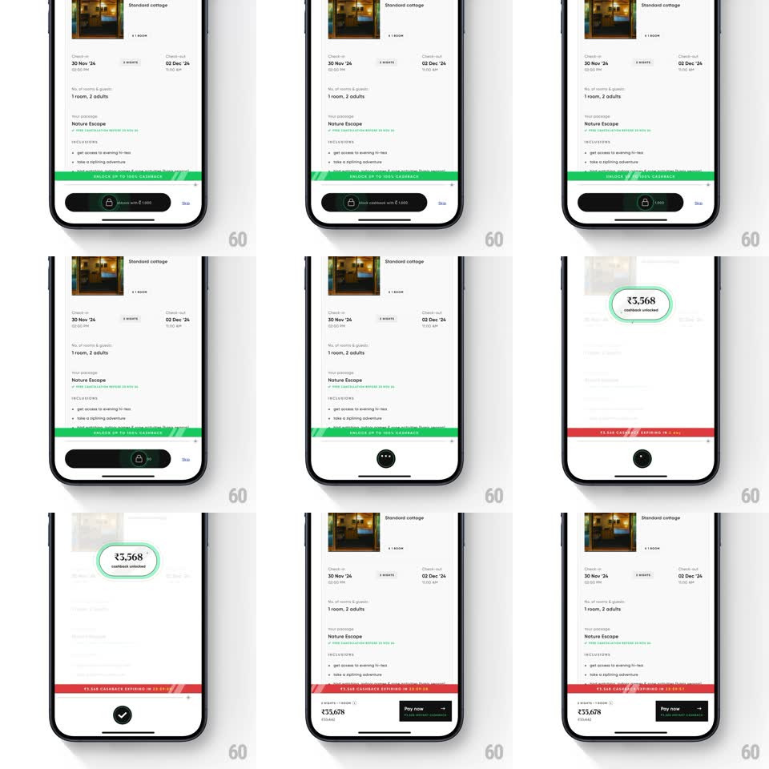

Media
Frame-by-frame

Rebuild this interaction 1:1: CRED's slide-to-unlock on a booking screen - dragging the black "unlock with ₹1,000" slider knob to the right morphs it into a spinner, the page whites out as a green circle draws itself and a rolling number ticker counts up the unlocked cashback ("₹3,568 cashback unlocked"), then the screen returns with a "₹X,XXX cashback earning in" red banner and a "Pay now" button.

Rebuild this interaction 1:1: CRED's slide-to-unlock on a booking screen - dragging the black "unlock with ₹1,000" slider knob to the right morphs it into a spinner, the page whites out as a green circle draws itself and a rolling number ticker counts up the unlocked cashback ("₹3,568 cashback unlocked"), then the screen returns with a "₹X,XXX cashback earning in" red banner and a "Pay now" button.
## Integration
Integration: stack-agnostic spec - springs given as stiffness/damping, timed motions as duration + curve; map every value to your framework and animation library of choice.
## Scene
CRED travel booking screen ("Standard cottage", dates, guests, "Nature Escape" package, green "UNLOCK UP TO 100% CASHBACK" strip). Bottom: a black slide-to-unlock pill with a lock knob. Completion screen: white, green ring with rolling amount, checkmark below. Final state: booking screen with red earning banner and black "Pay now" button.
## Motion spec
Pattern: slide gesture -> morph to spinner -> circular reveal -> rolling ticker -> return.
- Drag: the knob tracks the finger along the pill track (1:1); the label's sheen sweeps continuously while idle.
- Past ~80% travel: the knob snaps to the end (spring ~400/24), morphs into a spinner ring (arc rotation, 1s), and the pill fades out.
- The screen content whites out (250ms) as a green circle strokes itself at center (trim path 0 -> 100%, 500ms).
- Inside the ring, the cashback amount rolls up like a slot ticker ("₹3,568", digits scroll, ~700ms, ease-out) with "cashback unlocked" beneath; a check pops in below (scale spring ~320/20).
- Hold ~900ms; the completion screen slides away and the booking screen returns with the red banner sliding in from the top (300ms) and "Pay now" replacing the slider.
## Calibration
- The digit ticker rolls per-digit (ones fastest), not a fade between numbers.
- The green of the ring matches the cashback strip - same brand green throughout.
## Reduced motion
Slider completes -> white screen fades in with final amount and check (250ms); banner fades in.
## Don't miss
- The knob morphs into the spinner in place - no jump-cut between gesture and loading.
- The earning banner is red, contrasting the green unlock theme - do not unify the colors.